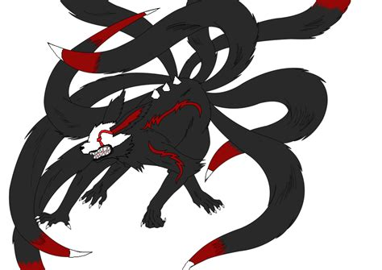

A kumiho (gumiho) (Korean pronunciation: [kumiho]; Korean: 구미호; Hanja: 九尾狐, literally "nine-tailed fox") is a creature that appears in the tales and legends of Korea.Deriving from ancient Chinese myths and folklores, a fox that lives a thousand years turns into a kumiho, like its Japanese and Chinese counterparts. It can freely transform, among other things, into a beautiful woman often set out to seduce boys, and eat their liver or heart (depending on the legend). There are numerous tales in which the kumiho appears, several of which can be found in the encyclopedic Compendium of Korean Oral Literature (한국 구비문학 대계/韓國口碑文學大系).Originating in Chinese myths dating back centuries before being introduced to Korean mythology,[4] the Korean kumiho shares many similarities to the Chinese huli jing and the Japanese kitsune. Classic of Mountains and Seas, an old Chinese text, claims a fox with nine tails lives in an area called Qingqiu (靑丘). As the kumiho and other versions of the nine-tailed fox myths and folklores originated from China, they all have a similar concept. All explain fox spirits as being the result of great longevity or the accumulation of energy, said to be foxes who have lived for a thousand years, and give them the power of shapeshifting, usually appearing in the guise of a woman. However, while huli jing and kitsune are often depicted with ambiguous moral compasses, possibly good or bad, the kumiho is almost always treated as a malignant figure who feasts on human flesh. It is unclear at which point in time Koreans began viewing the kumiho as a purely evil creature, since many ancient texts of the Chinese mention the benevolent kumiho assisting humans (and even make mentions of wicked humans tricking kind but naïve kumiho). In later literature, kumiho were often depicted as bloodthirsty half-fox, half-human creatures that wandered cemeteries at night, digging human hearts out from graves. The fairy tale The Fox Sister depicts a fox spirit preying on a family for their livers. However, according to Gyuwon Sahwa, kumiho is described as an auspicious fox spirit with a book in its mouth. Considering the text is thought to be written in 1675, some speculate that the modern violent image of kumiho is influenced during the Japanese occupation in Korea. Nevertheless, foxes often contained a negative image during the Koryo Dynasty (Shin Don was described as an old fox spirit due to his love for women and drinks despite his being a buddhist monk), suggesting two different views could have co-existed in ancient Korea. Taiping Guangji claims Silla worshipped foxes as sacred beings.
The most distinctive feature that separates the kumiho from its two counterparts (Japanese kitsune, and Chinese huli jing) is the existence of a 'yeowoo guseul' (여우구슬, literally meaning fox marble/bead) which is said to consist of knowledge. According to Korean mythology, the yeowoo guseul provides power to the kumiho and knowledge (and intelligence) to people if they can steal and swallow one. The kumiho can absorb humans' energy with it. The method of absorbing energy with the "yeowoo guseul" resembles a "deep kiss" (i.e. a kiss using a tongue). The kumiho sends the yeowoo guseul into people's mouths and then retakes it with their tongues. If that person swallows the yeowoo guseul, however, and then observes "sky, land, and people", each observation gives the observer preternatural knowledge. But the person fails to watch the "sky" in most tales, so they get a special ability but not the most important one. Most legends state that while a gumiho was capable of changing its appearance, there is still something persistently foxy about it (i.e. a foxy face, a set of ears, or the tell-tale nine tails) or a magical way of forcing; its countenance changes, but its nature does not. In Transformation of the Kumiho (구미호의 변신), a kumiho transforms into the identical likeness of a bride at a wedding and is only discovered when her clothes are removed. Bakh Mun-su and the Kumiho (박문수와 구미호) records an encounter that Pak Munsu has with a girl, living alone in the woods, that has a foxy appearance. In The Maiden who Discovered a Kumiho through a Chinese Poem (한시로 구미호를 알아낸 처녀), the kumiho is ultimately revealed when a hunting dog catches the scent of a fox and attacks. Although they have the ability to change forms, the true identity of a kumiho was said to be zealously guarded by the kumiho themselves. Some tales say that if a kumiho abstains from killing and eating humans for a thousand days, it can become human. Much like changelings, werewolves or vampires in Western lore, there are always variations on the myth depending on the liberties that each story takes with the legend. One version of the mythology, however, holds that with enough will, a kumiho could further ascend from its yogoe (yokai) state, become permanently human and lose its evil character. Explanations of how this could be achieved vary, but sometimes include aspects such as refraining from killing or tasting meat for a thousand days, or obtaining a cintamani and making sure that the Yeoiju saw the full moon at least every month during the ordeal. Unlike Yeoiju-wielding dragons, kumiho were not thought to be capable of omnipotence or creation at will, since they were lesser creatures.